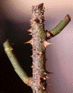
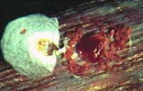

| Home |
| PEST OF ROSE |
mAJOR PESTES |
| 1. Rose thrips |
| 2. Red scale |
| 3. Red spider mite |
| 4. Rose aphid/lice |
mINOR PESTES |
| 1. Hairy caterpillar |
| 2. Castor semilooper |
| 3. Flower chaffer beetle |
| 4. Leaf folder |
| 5. Leaf cutting bee |
| Questions |
| Download Notes |
ROSE :: MAJOR PEST :: RED SCALE
2. Red Scale: Lindingaspis rossi (Coccidae : Hemiptera)
Damage symptoms
Reddish brown waxy scales completely cover the stem especially on the lower portion of the old stem and younger shoots. Tiny specks in scurvy like patches on the affected stems appear like spots of pox. The affected plant parts become disfigured, dry wither away. In case of severe infestation, the entire plant dies.
|  |  |
Bionomics : Female scales are wingless, comparatively larger and settle in a suitable feeding site, whereas long winged males move to fertilize the female scale.
Management : Cut and burn affected branches
Rub off scales from twigs with cotton soaked in kerosene or diesel.
Spray malathion 50 EC or endosulfan 1.0 L in 500 - 750 L of water / ha at the time of pruning and again during March- April or apply carbofuran 3G 5g/plant or spray fish oil rosin soap 25 g /L